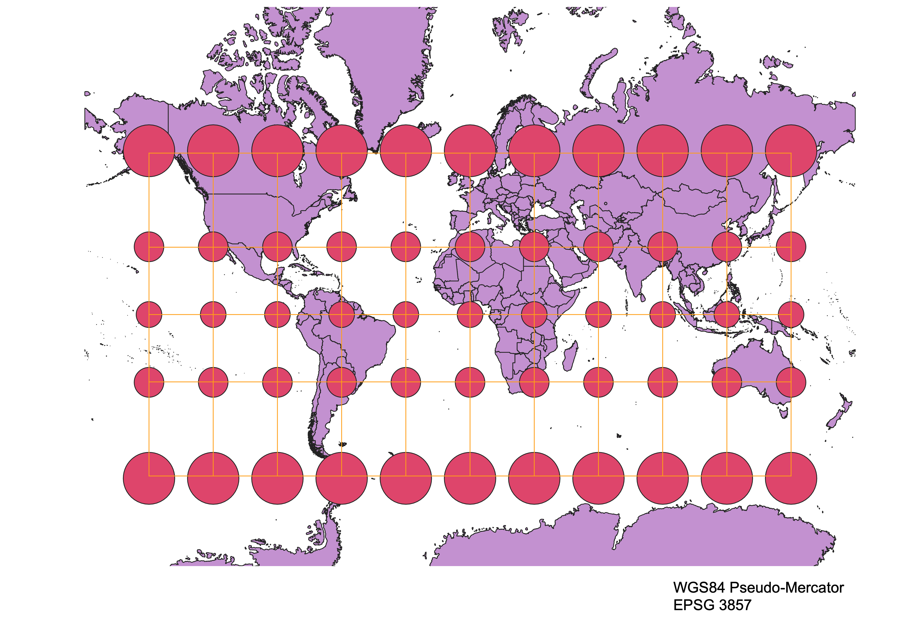
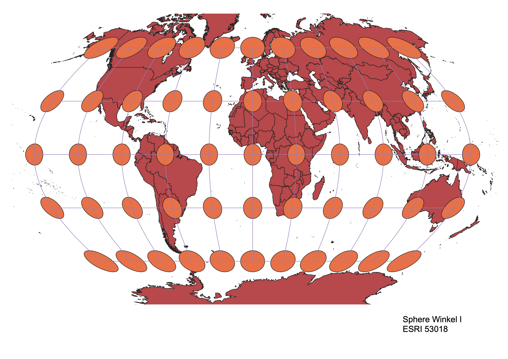
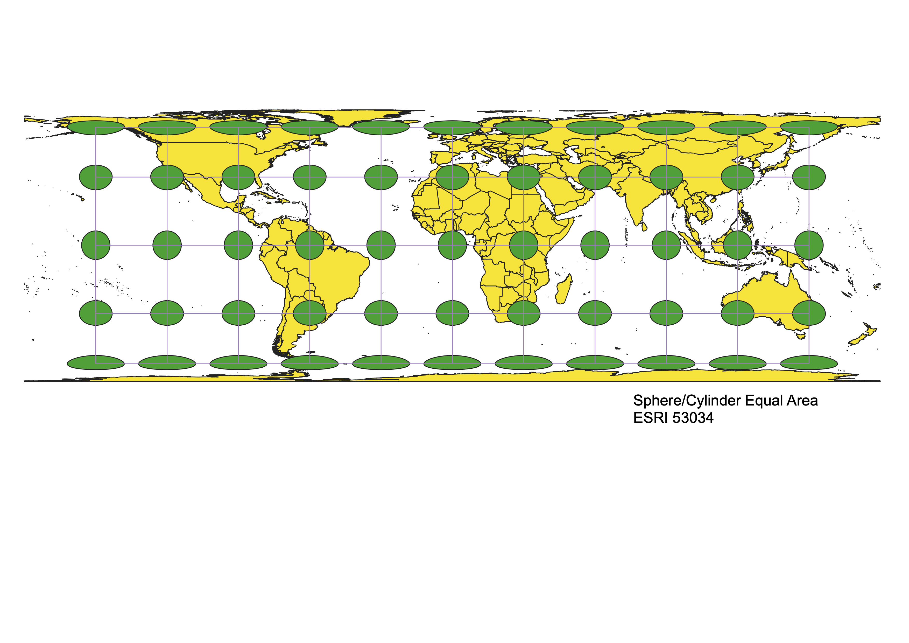

Displaying images of the world in different projections
Savannah Wilson
This is how I did it in QGIS:
I used a shapefile from naturalearth and the Tissot's Indicatrix plugin to create each of these projections. I set each map to a different projection and used the Indicatrix to model distortions caused by each projection.
WGS84 Projection
Some observations

Aitoff Projection
Some observations

WGS84 Pseudo-Mercator
Some observations

Sphere Winkel 1
Some observations

Sphere/Cylindrical Equal Area
Some observations

World Equidistant Conic
Some observations

Equidistant Azimuthal
Some observations

World Robinson
Some observations

World Cassini
Some observations

Data used for this project
Download Natural Earth 1:10m Cultural Vector